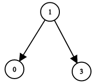
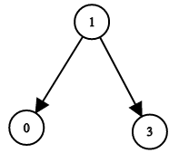
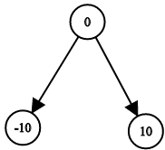
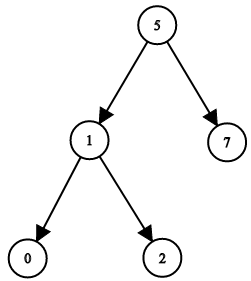
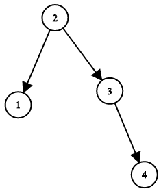

LC 94 98 700 1214 1305 1382 1522 - Tree Traversal: Inorder
Table of Contents
94. Binary Tree Inorder Traversal
Link: Binary Tree Inorder Traversal
Problem Description
Given a binary tree, return the inorder traversal of its nodes' values.
Example:
Input: [1,null,2,3]
1
\
2
/
3
Output: [1,3,2]
Follow up: Recursive solution is trivial, could you do it iteratively?
Method & Code
Simply follow the in order traversal rule. Use stack to temporary store node during the process.
/**
* Simply follow the in order traversal rule.
* Use stack to temporary store node during the process.
*
* @param root root node
* @return in order traversal node value
*/
public List<Integer> inorderTraversal(TreeNode root) {
LinkedList<Integer> res = new LinkedList<>();
Stack<TreeNode> s = new Stack<>();
TreeNode cur = root;
/* Traverse process */
while (cur != null || !s.isEmpty()) {
while (cur != null) {
s.add(cur);
cur = cur.left;
}
cur = s.pop();
res.add(cur.val);
cur = cur.right;
}
return res;
}
98. Validate Binary Search Tree
Link: Validate Binary Search Tree
Problem Description
Given a binary tree, determine if it is a valid binary search tree (BST).
Assume a BST is defined as follows:
- The left subtree of a node contains only nodes with keys less than the node’s key.
- The right subtree of a node contains only nodes with keys greater than the node’s key.
- Both the left and right subtrees must also be binary search trees.
Example 1:
2
/ \
1 3
Input: [2,1,3]
Output: true
Example 2:
5
/ \
1 4
/ \
3 6
Input: [5,1,4,null,null,3,6]
Output: false
Explanation: The root node's value is 5 but its right child's value is 4.
Method & Code
In-order traverse of all nodes in tree will output all nodes in increasing order. Hence, do the in-order traversal in tree and check whether each node follows BST’s rule.
Naive Inorder Traversal
/**
* In-order traversal with each root's value. Compare left subtree and right subtree.
*
* @param root root of tree
* @return if given tree is a valid BST
*/
public boolean isValidBST(TreeNode root) {
return dfs(root, Long.MIN_VALUE, Long.MAX_VALUE); // avoid int overflow
}
/**
* In-order traversal that compare root's value to left and right.
*
* @param root current root
* @param min min value
* @param max max value
* @return if given tree is a valid BST
*/
private boolean dfs(TreeNode root, long min, long max) {
if (root == null) {
return true;
}
if (root.val >= max || root.val <= min) { // no duplicate node as well
return false;
}
return dfs(root.left, min, root.val) && dfs(root.right, root.val, max);
}
Modified Inorder Traversal
/**
* Inorder traversal.
*
* @param root root of tree
* @return if given tree is a valid BST
*/
public boolean inOrder(TreeNode root) {
/* Corner case */
if (root == null || (root.left == null && root.right == null)) {
return true;
}
long[] arr = new long[]{Long.MIN_VALUE};
return dfs(root, arr);
}
/**
* In order traversal to traverse all nodes.
* Inorder traversal can traverse all nodes by increasing order if the tree is a valid BST.
*
* @param r current node
* @param previous previous node value
* @return if given tree is a valid BST
*/
private boolean dfs(TreeNode r, long[] previous) {
if (r == null) {
return true;
}
boolean out;
out = dfs(r.left, previous);
if ((long) r.val <= previous[0]) {
return false;
}
previous[0] = r.val;
return out & dfs(r.right, previous);
}
Iterative Approach With Stack
/**
* Iterative solution based on in-order traversal and stack.
*
* @param root root of tree
* @return if given tree is a valid BST
*/
public boolean stack(TreeNode root) {
Stack<TreeNode> stack = new Stack<>();
TreeNode current = root;
TreeNode previous = null;
while (!stack.isEmpty() || current != null) {
if (current != null) {
stack.push(current);
current = current.left;
} else {
TreeNode p = stack.pop();
if (previous != null && p.val <= previous.val) {
return false;
}
previous = p;
current = p.right;
}
}
return true;
}
700. Search in a Binary Search Tree
Link: Search in a Binary Search Tree
Problem Description
Given the root node of a binary search tree (BST) and a value. You need to find the node in the BST that the node’s value equals the given value. Return the subtree rooted with that node. If such node doesn’t exist, you should return NULL.
For example,
Given the tree:
4
/ \
2 7
/ \
1 3
And the value to search: 2
You should return this subtree:
2
/ \
1 3
In the example above, if we want to search the value 5, since there is no node with value 5, we should return NULL.
Note that an empty tree is represented by NULL, therefore you would see the expected output (serialized tree format) as [], not null.
Method & Code
Basic DFS with recursion. Utilize the rule of BST.
/**
* Basic DFS with recursion. Utilize the rule of BST.
*
* @param root root node
* @param val target value
* @return subtree rooted with that node, if such node doesn't exist, you should return NULL
*/
public TreeNode searchBST(TreeNode root, int val) {
if (root == null) {
return null;
}
if (root.val == val) {
return root;
}
return (root.val > val) ? searchBST(root.left, val) : searchBST(root.right, val);
}
1214. Two Sum BSTs
Link: Two Sum BSTs
Problem Description
Given two binary search trees, return True if and only if there is a node in the first tree and a node in the second tree whose values sum up to a given integer target.
Example 1:
 

Input: root1 = [2,1,4], root2 = [1,0,3], target = 5
Output: true
Explanation: 2 and 3 sum up to 5.
Example 2:

Input: root1 = [0,-10,10], root2 = [5,1,7,0,2], target = 18
Output: false
Constraints:
- Each tree has at most
5000nodes. -10^9 <= target, node.val <= 10^9
Method & Code
Naive approach: do the binary search recursively.
- Time complexity:
O(n * m) - Space complexity:
O(m + n)
The other approach is use a hash set to store one BST’s value and then traverse the other one.
- Time complexity:
O(n + m) - Space complexity:
O(m + n)
/**
* Naive approach: do the binary search recursively.
* Time complexity: O(n * m)
* Space complexity: O(m + n)
*
* @param root1 first BST
* @param root2 second BST
* @param target target value
* @return if there is a node in the first tree and a node in the second tree that sum up to a given target
*/
public boolean twoSumBSTs(TreeNode root1, TreeNode root2, int target) {
if (root1 == null || root2 == null) {
return false;
}
int tmp = root1.val + root2.val;
if (tmp == target) {
return true;
} else if (tmp > target) {
return twoSumBSTs(root1.left, root2, target) || twoSumBSTs(root1, root2.left, target);
} else {
return twoSumBSTs(root1.right, root2, target) || twoSumBSTs(root1, root2.right, target);
}
}
/**
* Use hash set to traverse the tree first, then search in second tree.
*
* @param root1 first BST
* @param root2 second BST
* @param target target value
* @return if there is a node in the first tree and a node in the second tree that sum up to a given target
*/
public boolean hashSet(TreeNode root1, TreeNode root2, int target) {
if (root1 == null || root2 == null) {
return false;
}
HashSet<Integer> s = new HashSet<>();
inorder(s, root1);
return search(root2, target, s);
}
/**
* Search two sum target based on given value
*
* @param r2 second BST
* @param target target value
* @param s hash set stores previous tree elements
* @return if there is a node in the first tree and a node in the second tree that sum up to a given target
*/
private boolean search(TreeNode r2, int target, HashSet<Integer> s) {
if (r2 == null) {
return false;
}
if (s.contains(target - r2.val)) {
return true;
} else {
return search(r2.left, target, s) || search(r2.right, target, s);
}
}
/**
* Inorder traversal to save all nodes.
*
* @param s hash set
* @param r root of tree
*/
private void inorder(HashSet<Integer> s, TreeNode r) {
if (r == null) {
return;
}
inorder(s, r.left);
s.add(r.val);
inorder(s, r.right);
}
1305. All Elements in Two Binary Search Trees
Link: All Elements in Two Binary Search Trees
Problem Description
Given two binary search trees root1 and root2.
Return a list containing all the integers from both trees sorted in ascending order.
Example 1:
Input: root1 = [2,1,4], root2 = [1,0,3]
Output: [0,1,1,2,3,4]
Example 2:
Input: root1 = [0,-10,10], root2 = [5,1,7,0,2]
Output: [-10,0,0,1,2,5,7,10]
Example 3:
Input: root1 = [], root2 = [5,1,7,0,2]
Output: [0,1,2,5,7]
Example 4:
Input: root1 = [0,-10,10], root2 = []
Output: [-10,0,10]
Example 5:
Input: root1 = [1,null,8], root2 = [8,1]
Output: [1,1,8,8]
Constraints:
- Each tree has at most
5000nodes. - Each node’s value is between
[-10^5, 10^5].
Method & Code
Similar to in-order traverse iterator. Use two stacks to store all parent nodes in in-order traverse order. Pop out the smaller one until two stacks are both empty.
/**
* In-order traverse iterator.
* Use two stacks to store all parent nodes in in-order traverse order.
*
* @param root1 first root of tree
* @param root2 second root of tree
* @return list containing all the integers from both trees sorted in ascending order
*/
public List<Integer> getAllElements(TreeNode root1, TreeNode root2) {
List<Integer> out = new LinkedList<>();
Stack<TreeNode> tmp1 = inorder(root1, new Stack<>()), tmp2 = inorder(root2, new Stack<>());
TreeNode current;
while (!tmp1.isEmpty() || !tmp2.isEmpty()) {
if (tmp1.isEmpty() || (!tmp2.isEmpty() && (tmp2.peek().val < tmp1.peek().val))) {
current = tmp2.pop();
out.add(current.val);
tmp2 = inorder(current.right, tmp2);
} else if (tmp2.isEmpty() || (tmp1.peek().val <= tmp2.peek().val)) {
current = tmp1.pop();
out.add(current.val);
tmp1 = inorder(current.right, tmp1);
}
}
return out;
}
/**
* Return a stack contains all nodes in in-order traverse order.
*
* @param root current root
* @param tmp stack with previous nodes
* @return stack contains all nodes in in-order traverse order
*/
private Stack<TreeNode> inorder(TreeNode root, Stack<TreeNode> tmp) {
/* Corner case */
if (root == null) {
return tmp;
}
while (root != null) {
tmp.push(root);
root = root.left;
}
return tmp;
}
1382. Balance a Binary Search Tree
Link: Balance a Binary Search Tree
Problem Description
Given a binary search tree, return a balanced binary search tree with the same node values.
A binary search tree is balanced if and only if the depth of the two subtrees of every node never differ by more than 1.
If there is more than one answer, return any of them.
Example 1:


Input: root = [1,null,2,null,3,null,4,null,null]
Output: [2,1,3,null,null,null,4]
Explanation: This is not the only correct answer, [3,1,4,null,2,null,null] is also correct.
Constraints:
- The number of nodes in the tree is between
1and10^4. - The tree nodes will have distinct values between
1and10^5.
Method & Code
Flatten the tree into a array list, then build the tree based on the sorted list. The building process is similar to binary search.
/**
* Flatten the tree into a array list, then build the tree based on the sorted list.
* The building process is similar to binary search.
*
* @param root root of given BST
* @return balanced BST
*/
public TreeNode balanceBST(TreeNode root) {
/* Corner case */
if (root == null) {
return null;
}
List<Integer> sorted = new ArrayList<>(); // note that array list is much more faster in this problem
int[] count = new int[]{0}; // avoid currency problem caused by global variable
inorder(sorted, root, count);
return buildTree(sorted, 0, count[0] - 1);
}
/**
* Inorder traversal to flatten the BST.
*
* @param sorted output list
* @param root current node of tree
* @param count count total nodes in tree
*/
private void inorder(List<Integer> sorted, TreeNode root, int[] count) {
if (root == null) {
return;
}
inorder(sorted, root.left, count);
sorted.add(root.val);
count[0]++;
inorder(sorted, root.right, count);
}
/**
* Build new balanced BST based on sorted array.
*
* @param sorted sorted array
* @param left lower boundary
* @param right upper boundary
* @return balanced BST
*/
private TreeNode buildTree(List<Integer> sorted, int left, int right) {
if (left > right) {
return null;
}
int mid = left + (right - left) / 2;
TreeNode root = new TreeNode(sorted.get(mid));
root.left = buildTree(sorted, left, mid - 1);
root.right = buildTree(sorted, mid + 1, right);
return root;
}
1522. Diameter of N-Ary Tree
Link: Diameter of N-Ary Tree
Problem Description
Given a root of an N-ary tree, you need to compute the length of the diameter of the tree.
The diameter of an N-ary tree is the length of the longest path between any two nodes in the tree. This path may or may not pass through the root.
(Nary-Tree input serialization is represented in their level order traversal, each group of children is separated by the null value.)
Example 1:

Input: root = [1,null,3,2,4,null,5,6]
Output: 3
Explanation: Diameter is shown in red color.
Example 2:

Input: root = [1,null,2,null,3,4,null,5,null,6]
Output: 4
Example 3:

Input: root = [1,null,2,3,4,5,null,null,6,7,null,8,null,9,10,null,null,11,null,12,null,13,null,null,14]
Output: 7
Constraints:
- The depth of the n-ary tree is less than or equal to
1000. - The total number of nodes is between
[0, 10^4].
Method & Code
The diameter is to find the two longest child path in the tree. DFS to find the two longest paths at each node, which the target length. Return the longest path at current node as the return value.
/**
* The diameter is to find the two longest child path in the tree.
* DFS to find the two longest paths at each node, which the target length.
* Return the longest path at current node as the return value.
*
* @param root root node of tree
* @return the length of the diameter of the tree
*/
public int diameter(Node root) {
/* Corner case */
if (root == null) {
return 0;
}
int[] max = new int[1];
dfs(root, max);
return max[0];
}
/**
* DFS to find the length of child path.
* Note that this approach stops at the leave node of the tree.
*
* @param root root of current subtree
* @param max max sum of two paths in tree
* @return max length of child path in current node
*/
private int dfs(Node root, int[] max) {
if (root.children == null || root.children.size() == 0) { // leave node
return 1;
}
PriorityQueue<Integer> pq = new PriorityQueue<>();
for (Node child : root.children) {
int depth = dfs(child, max);
pq.add(depth);
if (pq.size() > 2) { // find the longest two path in tree
pq.poll();
}
}
int l1 = pq.poll(), l2 = pq.size() == 0 ? 0 : pq.poll();
max[0] = Math.max(l1 + l2, max[0]); // longest path at current subtree
return Math.max(l1, l2) + 1; // longest child path at current node
}